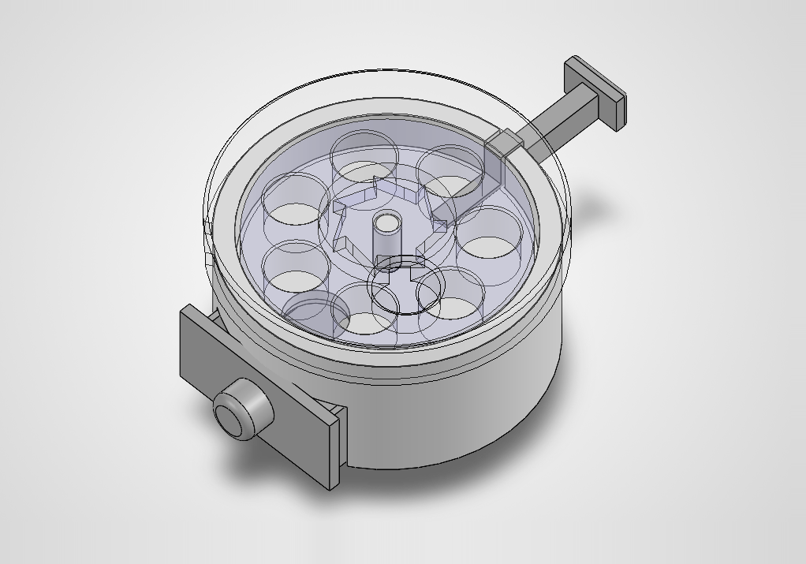
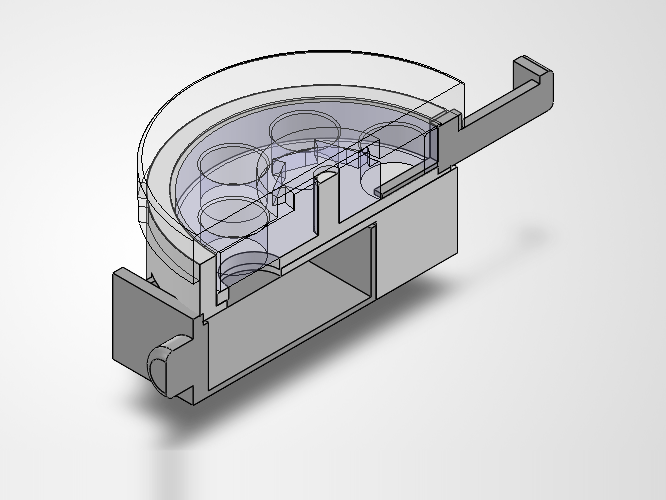
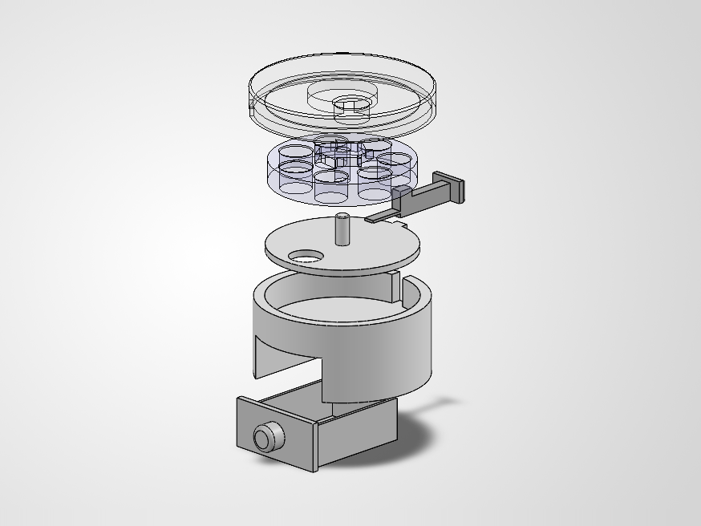
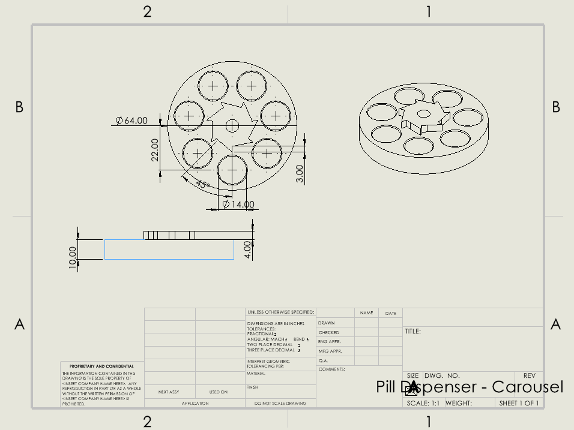
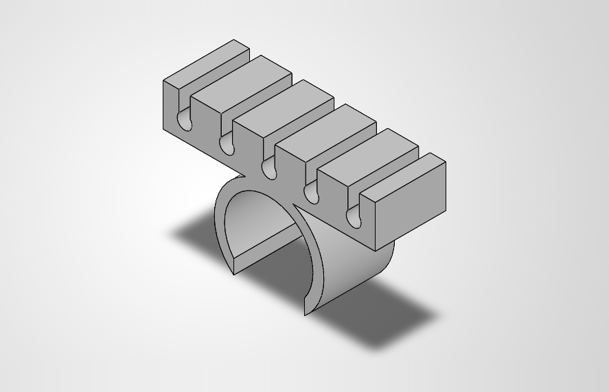
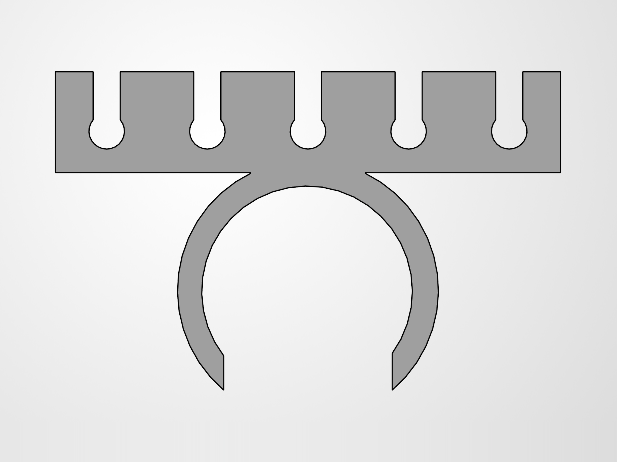
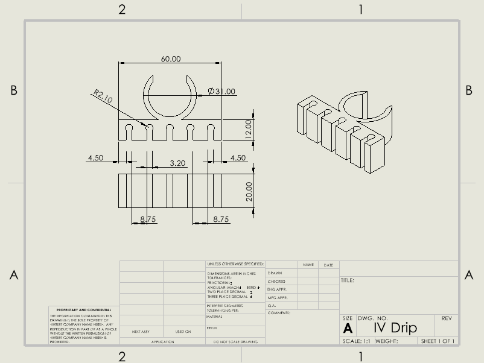
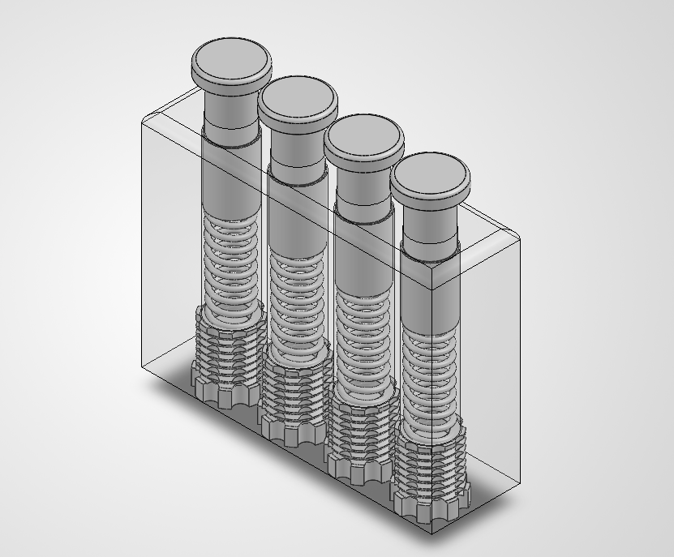
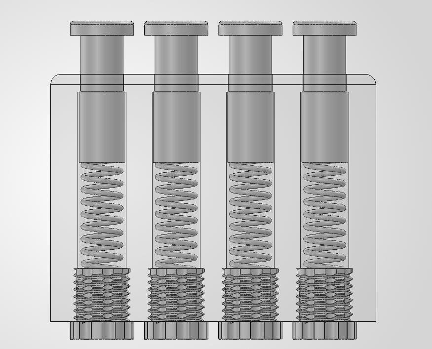
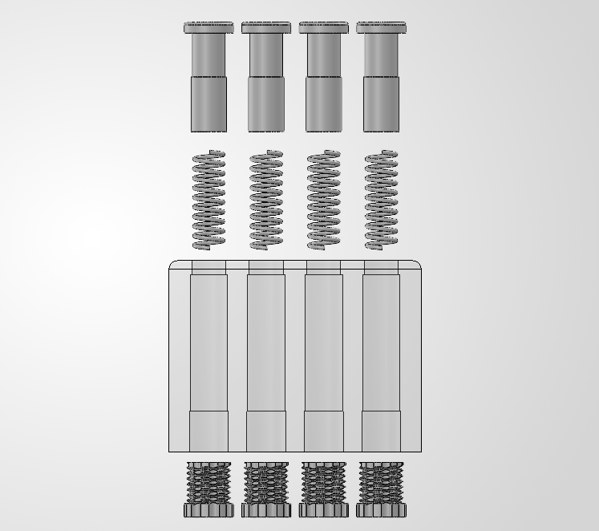

One-Handed Pill Dispenser
A 7-day pill carousel that lets one press dispense one dose for that day.

Six printed parts: base, base plate, carousel, lid, slider, drawer. The lid is shown transparent so the carousel and ratchet read through it.
The Problem
This is for people with arthritis, a tremor, or the use of only one hand. Pill bottle caps are hard to open with weak or shaky hands, and the pills themselves are small enough that picking one up is its own problem. Weekly organizers help, but you still have to lift the pill out of the compartment, and nothing tells you whether you already took today's dose.
I wanted a device you operate with one press, using the whole hand instead of the fingertips.
Requirements
- Dispense exactly one dose per press
- Work one handed, including by pressing it against a table
- Hold seven doses, one for each day
- Fit pills up to about 12 mm across
- No small loose parts, no sharp edges, easy to wipe down
- Print on a standard 3D printer. The only bought part is one compression spring.
How It Works
- The pills sit in seven pockets in a carousel that rotates. Underneath is a fixed plate, solid everywhere except for one exit hole. Six pills are blocked and one can fall.
- Pressing the slider drives a flexible pawl against one tooth of a seven tooth ratchet, turning the carousel exactly one seventh of a turn.
- The next pocket lines up with the exit hole and the pill drops down a chute.
- It lands in a drawer that pulls out from the front. A spring pushes the slider back out, and the pawl flexes over the next tooth on the way.
Why the Numbers Are What They Are
- Seven pockets means each press has to turn the carousel
360 ÷ 7, which is51.4°. - At the tip of the teeth that works out to about
11.7 mmof travel. I made the slider stroke14 mmso it definitely clears one tooth but can't reach two. - Each tooth only covers
45°of that51.4°. The1 mmgap left over gives the pawl a flat to seat on before it catches the next tooth. - The fill hole is
9.5 mmright and19.8 mmback from the center, which is exactly one pocket position. That way one pocket can dispense while another is being loaded.
Why I Picked These Numbers
| Part | Size | Why |
|---|---|---|
| Pill pocket | Ø14 at r22 | Fits a 12 mm pill with clearance, but not two side by side |
| Ratchet tooth | 45° of 51.4° | The leftover gap gives the pawl somewhere to seat, and sharp points don't print cleanly |
| Carousel bore | Ø6.4 on a Ø6 pin | 0.2 mm each side. Any tighter and a printed part binds. |
| Exit hole | Ø15 vs Ø14 hole | Slightly larger so a pill never catches on the lip on the way out |
| Tab and slot | 6.4 mm | Stops the plate rotating along with the carousel |
| Lid gap | 0.5 mm | Carousel turns freely, but the gap is too small for a pill to escape |
| Material | PETG or PLA | Stiff enough for the flexible pawl, prints without supports |



What I'd Improve
- Nothing holds the carousel when the slider springs back, so it can rotate backwards and lose its position. I would add a second flexible pawl on the lid that clicks into each tooth.
- The drawer slides out if the device is lifted, because the tunnel is open at the bottom. It needs rails.
- The front of the drawer is flat but the body is round, so there are gaps about 8 mm wide at the corners. Curving the front to match would close them.
- The slot for the plate's tab goes all the way through the wall, so you can see a gap from outside. Stopping the cut 1.6 mm short would fix it.
- I worked out the press force but I haven't measured it. The next step is pressing it onto a scale with a few different springs and comparing the result to my calculation. I am aiming for under 10 N.
- I have not tested reliability yet. The plan is 100 presses with all seven pockets loaded, counting how often it jams, drops two, or drops none.
- It is not child resistant. A real product would have to be, and that works against being easy to open one handed. I have not solved both at once yet.
- Nobody with arthritis has tried it. That feedback would probably change more than any of my calculations.
IV Line Organizer Clip
A clip that snaps onto an IV pole and holds five lines in separate slots, so a nurse can identify a line by position instead of tracing it by hand.

The Problem
A patient can have three to five IV lines going at once. They tangle around each other and around the pole. Finding a specific line means tracing it by hand, which takes time a nurse may not have, and a misread line can mean a drug delivered through the wrong route.
Separating the lines into fixed positions at one point on the pole makes identification visual instead of manual.
Requirements
- Hold five lines, each in its own fixed position
- Let a line be pushed in or pulled out one handed
- Clip onto a standard IV pole with no tools and no extra parts
- Never squeeze the tube shut
- Be smooth with no crevices, so it can be wiped down with disinfectant
- Be all plastic, so it's light and safe near an MRI
How It Works
- Five keyhole shaped channels go through a 60 by 20 by 12 mm block. Each one is a round bore with a narrower slot at the top.
- Pushing a line into the slot flexes the plastic open. Once past the narrow neck it snaps into the round bore and sits there without being squeezed.
- The channels sit at a fixed 12 mm pitch, so a line keeps the same position every time and can be called by number rather than traced.
- Underneath is a C shaped clamp. The opening is 20 mm and the pole is 25 mm, so the clamp flexes open to go on and then grips.
Checking It Against Real Poles
- Standard IV poles have a
25 mmlower tube with an18 mmtube that slides out of it. Bigger ICU ones run32 to 34 mm. - I targeted the 25 mm lower section because that is where the lines already hang.
- The
20 mmopening is80%of the pole width. That is enough interference to grip without needing a latch. - The channels are
4.2 mmfor roughly 4 mm tubing, with a3.2 mmneck, five of them at a12 mmpitch across the 60 mm block.
Why I Picked These Numbers
| Part | Size | Why |
|---|---|---|
| Channel | Ø4.2 mm | Slightly larger than the tube, so it holds without occluding it |
| Snap neck | 3.2 mm | Narrow enough to retain the tube, wide enough to release one handed |
| Channel pitch | 12 mm | Five channels across 60 mm, with 6 mm left at each end so the walls stay strong |
| Clamp hole | Ø25 mm | Matches the lower tube of a standard pole |
| Clamp opening | 20 mm | 80% of the hole, so it snaps on and stays on |
| Material | Polypropylene | Flexes repeatedly without cracking, and tolerates hospital disinfectants |


What I'd Improve
- It only fits one size of pole. The 25 mm clamp won't go on the 18 mm top tube or the 32 to 34 mm ICU poles. I would make a family of three sizes, or swap the clamp for a strap that fits anything.
- I chose 3.2 mm for the neck by reasoning, not testing. The next step is printing 3.0, 3.2 and 3.4 and measuring the pull out force on each.
- It only fits one tubing size, and real lines are not all the same.
- There are no markings on it yet. Position alone tells you which line is which, which only works if whoever loaded it and whoever reads it agree on the order. Engraved numbers, or color coding that matches what the hospital already uses, would fix that.
- I rounded the edges so there would be nowhere for debris to collect, but I have not tested cleaning it. At the moment that is a claim, not a result.
- Snapping it on and off will crack it eventually, and I do not know after how many cycles. A stress simulation and a cycle test would tell me.
Adjustable Finger Rehab Trainer
Four spring loaded plungers, one per finger, with the resistance set separately on each one.

The Problem
After a hand injury or a stroke, fingers do not recover at the same rate. The index finger can be close to normal while the ring finger is still weak. Almost every hand trainer I looked at makes all four fingers push against the same spring, so the strong fingers carry the work and the weak one coasts.
A therapist can tell someone to work the weak finger harder, but there is no way to set that on the device. If each finger has its own spring and its own setting, the exercise can be written on a card and repeated the same way at home.
Requirements
- Four stations, one per finger, each set on its own
- Adjustable by hand with no tools
- Repeatable, so a setting can be written down and found again
- Enough travel to feel like a real press, around 10 mm
- No small loose parts that could fall out
- Print on a standard 3D printer. The only bought parts are four compression springs.
How It Works
- Four bores run through a 92 by 28 by 70 mm block, spaced 21 mm apart so they sit under the fingers of a flat hand.
- Each bore holds a plunger. The top 5 mm of the bore is narrower than the rest, and the body of the plunger is wider than that, so the plunger is captive and cannot be pushed or pulled out.
- A compression spring sits underneath and pushes the plunger back up after every press.
- Below the spring is a threaded plug. Screwing it in squeezes the spring and makes the press harder. Backing it out makes the press lighter. The plug sits proud of the block, so the setting is visible without taking anything apart.
Why the Numbers Are What They Are
- The plunger cap floats
11 mmabove the block at rest, and that gap is the travel. Press it flat and the cap lands on the top face, which is the stop. - The spring is
35 mmfree and the gap it has to fill at rest is33 mm, so it carries2 mmof preload. That is what stops the plunger rattling when nobody is touching it. - Pressed all the way down the gap closes to
22 mm. Ten coils of 1.5 mm wire stack solid at15 mm, so there is7 mmleft over and the spring can never bind. - At a rate of
0.5 N/mmthat is1 Nat rest and6.5 Nfully pressed. - The plug is M16 x 2, so one turn moves it
2 mmand adds about1 N. One turn, one newton, is simple enough to tell someone over the phone.
Why I Picked These Numbers
| Part | Size | Why |
|---|---|---|
| Station pitch | 21 mm | Four bores across 92 mm leaves 14.5 mm of material at each end |
| Bore | Ø13.6 | 0.3 mm each side on the Ø13 plunger. Any tighter and a printed part binds. |
| Lip | Ø12.4 for 5 mm | Narrower than the plunger body, so the plunger stays captive |
| Plug thread | M16 x 2 | 2 mm per turn gives roughly 1 N per turn, and it is coarse enough to tap into plastic |
| Tap hole | Ø14.2 for 15 mm | The tap drill size for M16 x 2, so the thread is cut after printing |
| Spring | Ø12 OD, 35 free | Free length over mean diameter is 3.3, under the 4 where a spring buckles sideways |
| Plug knob | Ø18 | Leaves 3 mm between neighboring knobs at a 21 mm pitch |
| Material | PLA or PETG | Stiff enough for the plunger to slide cleanly, prints without supports |


What I'd Improve
- I drew the plug knobs at Ø22 and the stations are 21 mm apart, so neighboring knobs overlapped by 1 mm. The part files looked fine on their own. It only showed up once everything was mated, and I took the knobs down to Ø18 to fix it.
- The plunger guide is 20 mm long in a 13.6 mm bore, a ratio of 1.47. The usual rule is to stay above 1.5, so pressing off center could make it cock and jam the way a drawer binds when you pull one corner. Lengthening the guide to 28 mm takes it to 2.1 and costs nothing but bore depth.
- 0.3 mm of clearance per side is tight for FDM. Bores print undersized and the first layer flares out, so in practice these would need reaming before anything slid.
- Printed M16 threads would not survive being adjusted over and over. I sized the hole for a tap so the thread is cut properly after printing, but a brass insert would outlast that.
- Three millimeters between knobs clears, but it is tight to pinch, which is a problem on a device aimed at people with weak hands. A slot across the knob face turned with a coin would be easier.
- Nothing locks the plug once it is set. Repeated pressing could slowly back it out and change the resistance without the user noticing. A nylon washer or a detent would hold it.
- I calculated the spring rate, I have not measured it. The next step is pressing one plunger onto a kitchen scale at several plug settings and checking whether one turn really is one newton.
- No therapist or patient has touched it. That feedback would probably move the layout more than any number on this page.
Upcoming Work
Three projects I have not built yet. I picked each one because it needs a skill I do not have, which is the only reason worth picking a project at this point.
Four Bar Linkage Prosthetic Finger
A finger that closes from a single tendon pull, where the knuckle and the fingertip rotate in the right proportion because of the linkage geometry rather than because something drives each joint separately.
- Why it is harder
- Everything on this site so far holds still. This one has to move correctly, and the link lengths come out of synthesis rather than from picking a number and checking it afterward.
- What I need to learn
- Four bar synthesis, SolidWorks Motion to trace the fingertip path, and how to keep the linkage from locking at the ends of its travel.
Compliant Surgical Grasper
A laparoscopic grasper printed as one piece, with sections designed to flex instead of pins and pivots, so there are no joints to trap tissue or to seize up after autoclaving.
- Why it is harder
- There are no clearances to design, because there are no sliding parts. It works only if the right region bends by the right amount, so the geometry and the material behavior stop being separate problems.
- What I need to learn
- Flexure design, simulation to find where stress concentrates, and fatigue life, because a hinge that survives one squeeze is not the same as one that survives ten thousand.
Microfluidic Mixing Chip
A chip with channels a few tenths of a millimeter across that mixes two reagents on its way to a detection window, together with the mold tool it would be cast from.
- Why it is harder
- At that scale fluid does not swirl, it travels in neat parallel layers, so mixing has to be forced by the shape of the channel itself. The tolerances are also an order of magnitude tighter than anything I have modeled.
- What I need to learn
- Why flow stays layered at that scale, staggered herringbone channel geometry, and how to draft a mold so the cast part actually releases.
I would rather list these honestly than pad the site with practice parts. Each will get the same treatment as the projects above once it exists, including the part where I say what went wrong.